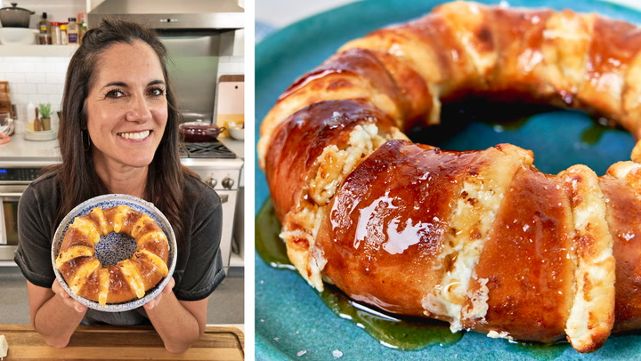

Stuffed Bagel

Description
Try this Hot Honey Butter Cream Cheese Stuffed Bagel for a quick and
tasty twist on breakfast! Slice a bagel halfway into 8 sections, then
stuff each with a piece of cream cheese. Mix melted butter with hot
honey, slather it all over the bagel, and sprinkle with flaky salt if
you like. Pop it in the air fryer at 390°F for 5-7 minutes until it’s
golden and caramelized. Finish with an extra drizzle of honey for a
deliciously sweet and tangy treat!
Ingredients
- 1 bagel
- 1 ounce cream cheese, cut into 8 slices
- 1 tablespoon hot honey or regular honey, plus more for drizzle
- 1 tablespoon butter
- Flaky salt (optional)
Steps
- Preheat Air Fryer:
- Preheat your air fryer to 390 degrees F (199 degrees C)
according to the manufacturer's instructions.
- Prepare the Bagel:
- Using a sharp knife, make 8 small cuts in the bagel. Be
careful not to cut all the way through; these cuts create
small openings or pockets in the bagel.
- Insert a slice of cream cheese into each of these small
openings around the bagel.
- Coat with Honey Butter Mixture:
- In a small dish, combine the hot honey (or regular honey)
with melted butter.
- Liberally coat the stuffed bagel with this honey butter
mixture, ensuring all surfaces are covered.
- Optionally, sprinkle a pinch of flaky salt over the bagel
for added flavor (if desired).
- Air Fry the Bagel:
- Place the prepared bagel into the preheated air fryer
basket.
- Air fry the bagel until it turns golden brown and crisp,
which typically takes about 5 to 7 minutes. Cooking time may
vary slightly depending on your air fryer model, so keep an
eye on it to prevent overcooking.
- Serve:
- Once the bagel is cooked to your desired crispness, remove
it from the air fryer.
- Optionally, drizzle more honey over the top for extra
sweetness and presentation.
- Enjoy:
- Your Hot Honey Butter Cream Cheese Stuffed Bagel is now
ready to be enjoyed! Serve it warm for the best experience.
- This recipe yields one serving. Adjust quantities
accordingly if making multiple servings.